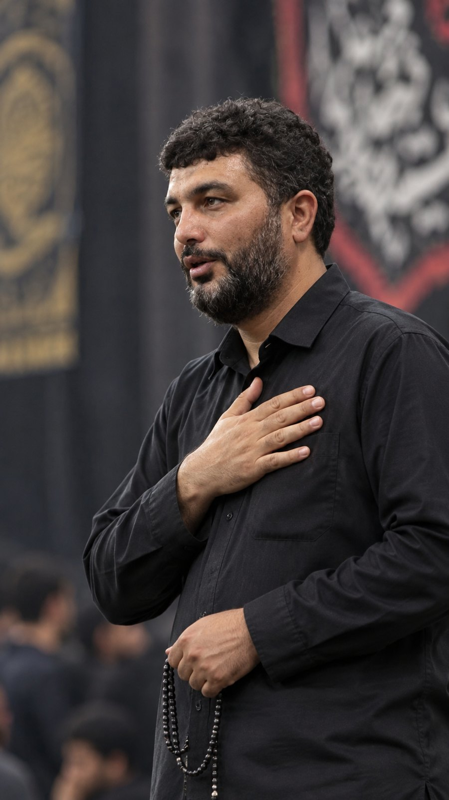

نماهنگ تصویری
مشاهده در آپارات ↗زهرای ایران
با صدای کربلایی حسین اردستانی


مداح اهلبیت علیهمالسلام · پایگاه رسمی نشر آثار
امروز و دو روز آینده
فعلاً مراسمی دایر نیست
دیدن نماهنگهای تصویری کربلایی حسین اردستانی
با صدای کربلایی حسین اردستانی
کربلایی حسین اردستانی
لحظههایی از محافل و مجالس اهلبیت علیهمالسلام


کانال ایتا و صفحه آپارات کربلایی حسین اردستانی
اخبار، مجالس و محتوای منتشرشده در کانال رسمی.
نماهنگها، کلیپها و آثار ویدیویی منتشرشده.
کربلایی حسین اردستانی
کربلایی حسین اردستانی از دوران کودکی در محافل قرآنی و مجالس اهلبیت علیهمالسلام حضور داشته و از همان سالها با فضای قرآن، ذکر و مداحی انس گرفته است.
این مسیر در طول سالهای زندگی ادامه پیدا کرده و با حضور در مجالس مذهبی، به مدیحهسرایی و مرثیهخوانی اهلبیت علیهمالسلام در شهر مقدس قم و استانهای کشور پرداخته است.
